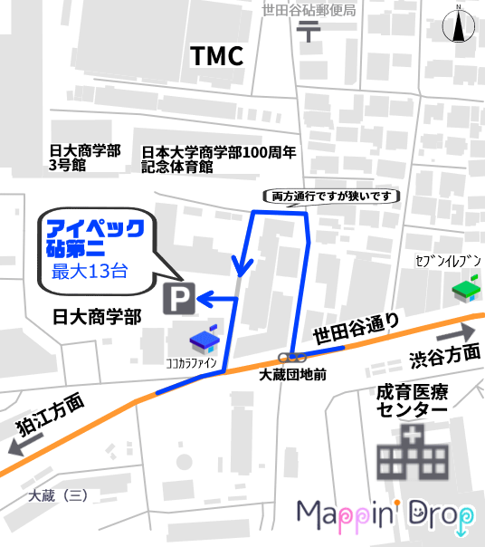
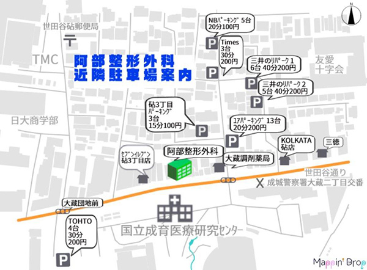

〒157-0073
東京都世田谷区砧3-4-3 グリーンモール砧1F
「成育医療センター前」バス停 目の前
小田急線 祖師ヶ谷大蔵駅より 徒歩15分
最大13台まで駐車可能です。
当院在院時間に応じて 最大1時間分のサービス券 をお渡しします。駐車場ご利用の際は必ず当日の駐車証明書ををご持参ください。

以前より停められる台数が少なくなっております。
提携駐車場ではありませんがよろしければ下の駐車場案内図もご参考にしてください。
